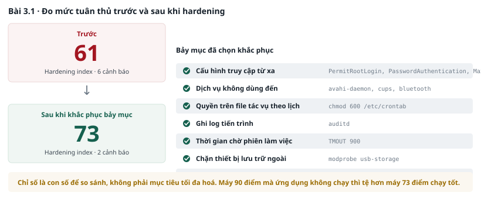
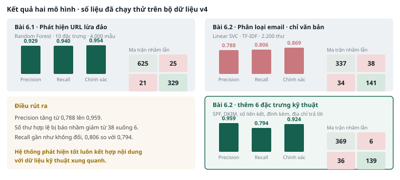

PHẦN J · MƯỜI BÀI KỸ THUẬT CHUYÊN ĐỀ 3 ĐẾN 6#
Nhóm 1 — Chuyên đề 3 · Quản lý thay đổi an toàn#
Bài 3.1 · Kiểm định cấu hình và hardening#
Thời lượng 35 phút · Máy Ubuntu
Mục tiêu#
Đo được mức tuân thủ cấu hình trước và sau khi hardening, và biết cách quyết định mục nào nên áp dụng, mục nào nên bỏ qua.
Điều kiện tiên quyết#
- Máy Ubuntu đang bật, có quyền sudo.
- Đã tạo snapshot trước khi vào bài.
Các bước thực hiện#
Bước 1 — Đo mức tuân thủ ban đầu
sudo apt install -y lynis
# Chạy kiểm định và lưu kết quả làm mốc so sánh
sudo lynis audit system --quick 2>&1 | tee ~/lynis_truoc.txt
# Lấy chỉ số tuân thủ
grep "Hardening index" ~/lynis_truoc.txt
Bước 2 — Đọc danh sách khuyến nghị
# Cảnh báo: mức ưu tiên cao
grep "\[WARNING\]" ~/lynis_truoc.txt
# Gợi ý: mức ưu tiên thấp hơn, số lượng rất nhiều
grep -c "\[SUGGESTION\]" ~/lynis_truoc.txt
grep "\[SUGGESTION\]" ~/lynis_truoc.txt | head -20
CẢNH BÁO
Không áp dụng toàn bộ khuyến nghị. Lynis đưa ra hàng chục gợi ý, nhiều gợi ý không phù hợp với vai trò của máy này. Áp dụng hết là nguyên nhân phổ biến nhất khiến baseline bị bỏ sau vài tuần vì làm hỏng nghiệp vụ.
Bước 3 — Chọn bảy mục và khắc phục
Chọn theo hai tiêu chí: tác động an toàn cao, và không làm hỏng dịch vụ đang chạy. Bảy mục dưới đây là gợi ý.
# 1. Siết cấu hình truy cập từ xa
sudo sed -i 's/^#\?PermitRootLogin.*/PermitRootLogin no/' /etc/ssh/sshd_config
sudo sed -i 's/^#\?PasswordAuthentication.*/PasswordAuthentication no/' /etc/ssh/sshd_config
sudo sed -i 's/^#\?X11Forwarding.*/X11Forwarding no/' /etc/ssh/sshd_config
sudo sed -i 's/^#\?MaxAuthTries.*/MaxAuthTries 3/' /etc/ssh/sshd_config
# 2. Tắt dịch vụ không dùng đến
sudo systemctl disable --now avahi-daemon cups bluetooth 2>/dev/null
# 3. Siết quyền trên file cấu hình tác vụ theo lịch
sudo chmod 600 /etc/crontab
# 4. Bật ghi log process
sudo apt install -y auditd
sudo systemctl enable --now auditd
# 5. Đặt thời gian chờ phiên làm việc
echo "readonly TMOUT=900" | sudo tee -a /etc/profile.d/tmout.sh
# 6. Tắt các mô đun nhân không cần
echo "install usb-storage /bin/true" | sudo tee /etc/modprobe.d/chan-usb.conf
# 7. Áp dụng và kiểm tra cú pháp trước khi khởi động lại dịch vụ
sudo sshd -t && sudo systemctl restart ssh
LƯU Ý
Trên Ubuntu 22.04 tên dịch vụ là
ssh, không phảisshd. Lệnhsshd -tkiểm tra cú pháp file cấu hình trước khi khởi động lại. Bỏ bước này mà cấu hình sai thì dịch vụ không lên, và bạn mất luôn đường truy cập từ xa vào máy ảo.
Bước 4 — Đo lại và so sánh
sudo lynis audit system --quick 2>&1 | tee ~/lynis_sau.txt
grep "Hardening index" ~/lynis_truoc.txt ~/lynis_sau.txt
# Xem những cảnh báo đã biến mất
diff <(grep "\[WARNING\]" ~/lynis_truoc.txt) <(grep "\[WARNING\]" ~/lynis_sau.txt)
Bước 5 — Tạo snapshot cho bài 3.2
Đặt tên snapshot là da-tang-cuong. Bài 3.2 sẽ dùng snapshot này để rollback.
Kết quả mong đợi#
| Nội dung | Kết quả |
|---|---|
| Chỉ số tuân thủ ban đầu | Thường trong khoảng 55 đến 68 |
| Chỉ số sau khi khắc phục bảy mục | Tăng khoảng 8 đến 15 điểm |
| Số cảnh báo giảm đi | Từ 3 đến 6 cảnh báo |
| Snapshot | Đã tạo với tên da-tang-cuong |
GHI NHỚ
Chỉ số tuân thủ là con số để so sánh trước và sau, không phải mục tiêu để tối đa hoá. Một máy đạt 90 điểm nhưng ứng dụng nghiệp vụ không chạy được thì tệ hơn một máy đạt 70 điểm và chạy tốt.
Phiếu ghi nhận 3.1#
Làm bài ngay tại đây · Phiếu ghi nhận 3.1
| Nội dung | Giá trị |
|---|---|
| Chỉ số tuân thủ trước | |
| Chỉ số tuân thủ sau | |
| Bảy mục đã khắc phục | |
| Ba mục đã cân nhắc nhưng bỏ qua, kèm lý do | |
| Cảnh báo còn lại sau khi khắc phục |
Mức mở rộng#
- Viết bảy mục vừa khắc phục thành một file baseline dạng văn bản, có định dạng để công cụ quản lý cấu hình đọc được.
- Nếu áp dụng baseline này cho server cơ sở dữ liệu, mục nào cần bỏ đi? Vì sao?
Xử lý sự cố#
| Hiện tượng | Cách khắc phục |
|---|---|
| Mất kết nối sau khi khởi động lại dịch vụ | Dùng bảng điều khiển của phần mềm ảo hoá để vào thẳng máy. Sửa lại file cấu hình hoặc khôi phục snapshot |
lynis báo lệnh không tồn tại |
Chạy sudo apt install -y lynis. Nếu không có mạng, báo trợ giảng |
| Chỉ số tuân thủ không tăng | Kiểm tra đã khởi động lại dịch vụ chưa. Một số mục chỉ có hiệu lực sau khi khởi động lại máy |

Bài 3.2 · Thay đổi sai và rollback bằng snapshot#
Thời lượng 20 phút · Máy Ubuntu
Mục tiêu#
Thực hiện một thay đổi làm giảm mức an toàn, phát hiện bằng công cụ, rồi rollback và xác minh hệ thống đã trở về trạng thái trước.
Điều kiện tiên quyết#
- Đã hoàn thành bài 3.1 và có snapshot tên
da-tang-cuong.
Các bước thực hiện#
Bước 1 — Ghi lại cấu hình hiện tại làm bằng chứng
sudo sshd -T | grep -E "permitrootlogin|passwordauthentication|maxauthtries" \
| tee ~/cauhinh_truoc.txt
Bước 2 — Cố ý đẩy một cấu hình nguy hiểm
Giả định tình huống: một nhà thầu báo không đăng nhập được bằng mật khẩu, và quản trị viên mở lại để họ làm việc cho nhanh.
sudo sed -i 's/^PasswordAuthentication no/PasswordAuthentication yes/' /etc/ssh/sshd_config
sudo sed -i 's/^PermitRootLogin no/PermitRootLogin yes/' /etc/ssh/sshd_config
sudo sed -i 's/^MaxAuthTries 3/MaxAuthTries 10/' /etc/ssh/sshd_config
sudo sshd -t && sudo systemctl restart ssh
Bước 3 — Xác nhận thay đổi đã được áp dụng
sudo sshd -T | grep -E "permitrootlogin|passwordauthentication|maxauthtries" \
| tee ~/cauhinh_sau_thaydoi.txt
diff ~/cauhinh_truoc.txt ~/cauhinh_sau_thaydoi.txt
Bước 4 — Phát hiện bằng công cụ, không phát hiện bằng trí nhớ
sudo lynis audit system --quick 2>&1 | grep "Hardening index"
Chỉ số tuân thủ giảm. Đây là cách một hệ thống phát hiện configuration drift hoạt động.
Bước 5 — Rollback
Tắt máy ảo, khôi phục snapshot da-tang-cuong, khởi động lại.
Bước 6 — Xác minh sau rollback
sudo sshd -T | grep -E "permitrootlogin|passwordauthentication|maxauthtries" \
| tee ~/cauhinh_sau_rollback.txt
diff ~/cauhinh_truoc.txt ~/cauhinh_sau_rollback.txt \
&& echo "Đã trở về đúng trạng thái trước thay đổi"
Kết quả mong đợi#
| Bước | Kết quả |
|---|---|
| Sau bước 3 | Ba dòng cấu hình đều đổi giá trị |
| Sau bước 4 | Chỉ số tuân thủ giảm so với cuối bài 3.1 |
| Sau bước 6 | Lệnh diff không in ra gì, nghĩa là khớp hoàn toàn |
Phiếu ghi nhận 3.2#
Làm bài ngay tại đây · Phiếu ghi nhận 3.2
| Câu hỏi | Trả lời |
|---|---|
| Ba giá trị cấu hình trước thay đổi | |
| Ba giá trị sau thay đổi | |
| Chỉ số tuân thủ trước và sau | |
Kết quả diff sau rollback | |
| Nếu không có snapshot, bạn rollback bằng cách nào? | |
| Nếu thay đổi này đã chạy hai ngày và có dữ liệu mới, khôi phục snapshot có còn dùng được không? | |
| Ai có quyền quyết định rollback vào lúc hai giờ sáng? |
Mức mở rộng#
- Viết một script chạy theo lịch, mỗi giờ so sánh cấu hình hiện tại với file baseline và gửi cảnh báo khi lệch.
- Trong tình huống ở bước 2, quy trình change management lẽ ra phải yêu cầu những gì trước khi cho phép mở lại xác thực bằng mật khẩu?
Bài 3.3 · Sửa firewall rule theo quy trình change#
Thời lượng 30 phút · pfSense và dữ liệu cấp sẵn
Mục tiêu#
Thực hiện trọn vẹn một thay đổi có kiểm soát: impact assessment, phê duyệt, thực hiện, xác minh, đóng hồ sơ.
Tình huống#
Ở bài TH-9 bạn phát hiện cổng 8443 đang mở ra Internet mà không có change record. Trưởng bộ phận yêu cầu đóng cổng đó lại, và lần này phải làm đúng quy trình.
Các bước thực hiện#
Bước 1 — Lập change request
Điền phiếu ở mục Phiếu ghi nhận trước khi chạm vào hệ thống. Đây là bước học viên hay bỏ qua.
Bước 2 — Trả lời tám câu hỏi impact assessment
1. Thay đổi này có mở thêm cổng, giao diện quản trị hoặc đường truy cập nào không?
2. Có tài khoản, vai trò hoặc quyền nào được tạo mới hoặc nâng lên không?
3. Có thành phần phần mềm bên thứ ba nào được đưa vào không?
4. Dữ liệu nào bị ảnh hưởng? Có dữ liệu cá nhân không?
5. Thay đổi có làm thay đổi phạm vi hoặc nội dung log đang ghi không?
6. Có secret nào được tạo, thay đổi hoặc di chuyển không?
7. Baseline hiện tại có bị phá vỡ ở điểm nào không?
8. Nếu thay đổi này bị lợi dụng, hậu quả tối đa là gì?
Bước 3 — Xác định ai đang dùng cổng đó trước khi đóng
Đóng một cổng mà không kiểm tra là cách nhanh nhất để làm gián đoạn nghiệp vụ.
cd ~/lab/dulieu
# Có bao nhiêu kết nối tới cổng 8443, từ những nguồn nào
awk -F',' '$22=="8443" {print $19}' pfsense_filterlog.log \
| sort | uniq -c | sort -rn | head -10
# Kết nối xuất hiện trong khung giờ nào
awk -F',' '$22=="8443" {print $3}' pfsense_filterlog.log \
| cut -c1-2 | sort | uniq -c | sort -rn | head -5
Bước 4 — Thực hiện trên giao diện firewall
- Mở
https://192.168.20.1, đăng nhập. - Vào mục Firewall, chọn Rules, chọn giao diện WAN.
- Tìm quy tắc cho phép cổng 8443.
- Không xoá quy tắc. Chọn tắt quy tắc và ghi mô tả:
TD-2026-087 tam tat, cho xac minh. - Áp dụng thay đổi.
GHI NHỚ
Tắt thay vì xoá. Nếu phát hiện có nghiệp vụ thật đang dùng cổng đó, bật lại mất mười giây. Xoá rồi thì phải dựng lại quy tắc từ đầu và dễ sai.
Bước 5 — Xác minh sau thay đổi
# Từ Kali, thử kết nối tới cổng đã đóng
nc -zv -w 3 192.168.10.20 8443
# Kiểm tra các cổng còn lại vẫn hoạt động
nc -zv -w 3 192.168.10.20 22
nc -zv -w 3 192.168.10.20 443
Bước 6 — Đóng hồ sơ
Ghi vào phiếu: thời điểm thực hiện, người thực hiện, kết quả xác minh, và cập nhật asset inventory nếu cần.
Kết quả mong đợi#
| Nội dung | Kết quả |
|---|---|
| Số kết nối tới cổng 8443 trong kỳ | 739 |
| Nguồn kết nối | Nhiều địa chỉ Internet khác nhau, không phải một đối tác cố định |
| Kết luận | Không có nghiệp vụ nội bộ nào phụ thuộc cổng này, đóng được |
| Sau khi đóng | Cổng 8443 không kết nối được, cổng 22 và 443 vẫn hoạt động |
Phiếu ghi nhận 3.3 — Change request#
Làm bài ngay tại đây · Phiếu ghi nhận 3.3 — Change request
| Trường | Nội dung |
|---|---|
| Mã thay đổi và ngày đề nghị | |
| Mô tả thay đổi | |
| Lý do nghiệp vụ | |
| Phân loại và mức rủi ro | |
| Hệ thống bị ảnh hưởng | |
| Kết quả tám câu hỏi impact assessment | |
| Kế hoạch kiểm thử và kết quả | |
| Kế hoạch rollback | |
| Người thực hiện và người kiểm tra chéo | |
| Kết quả xác minh sau thay đổi |
Bài 3.4 · Quét dependency và secret trên repository#
Thời lượng 35 phút · Máy Kali · Chạy ngoại tuyến
Mục tiêu#
Thiết lập bốn loại kiểm thử tự động trong quy trình build, và quyết định ngưỡng nào nên chặn, ngưỡng nào chỉ cảnh báo.
Điều kiện tiên quyết#
- Repository mẫu đã được đóng gói sẵn tại
~/lab/ung-dung-co-lo-hong. - Bộ nhớ đệm gói và cơ sở dữ liệu lỗ hổng đã tải sẵn, không cần Internet.
Các bước thực hiện#
Bước 1 — Xem repository
cd ~/lab/ung-dung-co-lo-hong
ls -la
git log --oneline | head -10
Bước 2 — Quét dependency
# Gói JavaScript
npm audit --offline --json | tee ~/kq_npm.json
npm audit --offline | head -40
# Gói Python
pip-audit -r requirements.txt --no-deps -f json -o ~/kq_pip.json 2>/dev/null \
|| echo "Dùng cơ sở dữ liệu ngoại tuyến, xem hướng dẫn của trợ giảng"
Bước 3 — Quét hệ thống file và ảnh container
trivy fs --offline-scan --severity HIGH,CRITICAL . | tee ~/kq_trivy.txt
Bước 4 — Phân tích mã tĩnh
semgrep --config ~/lab/congcu/quy-tac-semgrep --json . | tee ~/kq_semgrep.json
semgrep --config ~/lab/congcu/quy-tac-semgrep . | head -40
Bước 5 — Quét secret, gồm cả lịch sử repository
gitleaks detect --source . --report-path ~/kq_gitleaks.json --no-git=false
cat ~/kq_gitleaks.json | jq -r '.[] | "\(.File):\(.StartLine) \(.RuleID)"'
CẢNH BÁO
Secret đã bị đưa lên repository phải được thu hồi và thay mới, không phải chỉ xoá khỏi phiên bản hiện tại. Khoá vẫn còn trong lịch sử commit và vẫn còn hiệu lực. Đây là hiểu nhầm phổ biến nhất về quét secret.
Bước 6 — Khắc phục rồi chạy lại
npm audit fix --offline
npm audit --offline --json | jq '.metadata.vulnerabilities'
Kết quả mong đợi#
| Loại quét | Kết quả |
|---|---|
| Dependency | Nhiều lỗ hổng, phần lớn sửa được bằng cách nâng phiên bản |
| Hệ thống file | Một số thành phần mức cao và nghiêm trọng |
| Mã tĩnh | Vài mẫu lập trình nguy hiểm, có cả false positive |
| Secret | Ít nhất một khoá nằm trong lịch sử commit |
Phiếu ghi nhận 3.4#
Làm bài ngay tại đây · Phiếu ghi nhận 3.4
| Loại quét | Số phát hiện | Sửa bằng nâng phiên bản | Phải sửa mã | Ngưỡng đề xuất cho cổng kiểm soát |
|---|---|---|---|---|
| Dependency | ||||
| Hệ thống file | ||||
| Mã tĩnh | ||||
| Secret |
Làm bài ngay tại đây · Phiếu ghi nhận 3.4
| Câu hỏi | Trả lời |
|---|---|
| Secret tìm được đã thu hồi chưa, hay chỉ mới xoá khỏi mã? | |
| Loại quét nào nên chặn build, loại nào chỉ cảnh báo? Vì sao? | |
| Nếu bật chế độ chặn ngay từ ngày đầu, điều gì sẽ xảy ra? |
Nhóm 2 — Chuyên đề 4 · Giám sát#
Bài 4.5 · Mô hình phát hiện bất thường trên log xác thực#
Thời lượng 25 phút · Máy Kali · Dữ liệu cấp sẵn
Mục tiêu#
Huấn luyện một mô hình phát hiện bất thường không cần nhãn, rồi đối chiếu kết quả với các detection use case đã viết ở bài TH-2.
Điều kiện tiên quyết#
- Đã hoàn thành TH-2 và biết đáp án đúng.
- Notebook đã cấp sẵn tại
~/lab/sotay/4.5_phat_hien_bat_thuong.ipynb.
Các bước thực hiện#
Bước 1 — Mở notebook
cd ~/lab/sotay
jupyter notebook 4.5_phat_hien_bat_thuong.ipynb
Bước 2 — Tạo đặc trưng theo từng khung giờ
Phần này đã viết sẵn trong sổ tay. Đọc để hiểu năm đặc trưng được chọn.
import re, collections, numpy as np
gio = collections.defaultdict(lambda: {"that_bai":0, "thanh_cong":0,
"dia_chi":set(), "sudo":0})
for l in open("/home/hocvien/lab/dulieu/auth.log", encoding="utf-8"):
m = re.match(r"^(\w{3})\s+(\d+)\s(\d{2}):", l)
if not m:
continue
k = "%s-%02d %s" % (m.group(1), int(m.group(2)), m.group(3))
if "Failed password" in l: gio[k]["that_bai"] += 1
if "Accepted" in l: gio[k]["thanh_cong"] += 1
if "sudo:" in l: gio[k]["sudo"] += 1
ip = re.search(r"from ([0-9.]+)", l)
if ip: gio[k]["dia_chi"].add(ip.group(1))
khoa = sorted(gio)
X = np.array([[gio[k]["that_bai"],
gio[k]["thanh_cong"],
len(gio[k]["dia_chi"]),
gio[k]["sudo"],
int(int(k[-2:]) < 6 or int(k[-2:]) >= 20)] for k in khoa])
print("Số khung giờ có dữ liệu:", len(khoa))
Bước 3 — Huấn luyện Isolation Forest
from sklearn.ensemble import IsolationForest
mh = IsolationForest(contamination=0.05, random_state=42)
kq = mh.fit_predict(X)
diem = mh.score_samples(X)
bt = sorted([(khoa[i], X[i], diem[i]) for i in range(len(khoa)) if kq[i] == -1],
key=lambda x: x[2])
print("Số khung giờ bị đánh dấu bất thường:", len(bt))
for k, v, d in bt[:10]:
print("%-12s thất bại %4d · thành công %4d · %d địa chỉ · %d sudo · điểm %.3f"
% (k, v[0], v[1], v[2], v[3], d))
Bước 4 — Đối chiếu với detection use case của TH-2
Với mỗi khung giờ mô hình đánh dấu, trả lời: detection use case ở TH-2 có bắt được khung giờ này không?
Bước 5 — Thử đổi tham số
for c in [0.01, 0.03, 0.05, 0.10]:
m = IsolationForest(contamination=c, random_state=42)
print("contamination=%.2f → %d khung giờ bị đánh dấu"
% (c, (m.fit_predict(X) == -1).sum()))
Kết quả mong đợi#
| Nội dung | Kết quả |
|---|---|
| Tổng số khung giờ có dữ liệu | 336 |
| Số khung giờ bị đánh dấu bất thường | 17 |
| Khung giờ bất thường nhất | Sep-01 21 với 212 thất bại, 9 thành công, 7 địa chỉ, điểm -0.730 |
| Khung giờ thứ hai | Sep-11 08 với 29 thất bại, 84 thành công, 8 địa chỉ, 32 sudo |
| Khung giờ thứ ba | Sep-01 22 với 78 thất bại |
GHI NHỚ
Khung giờ
Sep-01 21là brute force ở TH-2, detection use case đã bắt được. Khung giờSep-11 08là ngày impossible travel ở TH-11, và detection use case của TH-2 không bắt được vì số lần thất bại chỉ có 29, dưới ngưỡng 50.Đây chính là giá trị của mô hình: nó chỉ ra khung giờ đáng xem mà luật tĩnh bỏ qua, dù nó không nói được vì sao.
Phiếu ghi nhận 4.5#
Làm bài ngay tại đây · Phiếu ghi nhận 4.5
| # | Khung giờ | Điểm | Detection use case TH-2 có bắt được không | Giải thích được vì sao bất thường không |
|---|---|---|---|---|
| 1 | ||||
| 2 | ||||
| 3 |
Làm bài ngay tại đây · Phiếu ghi nhận 4.5
| Câu hỏi | Trả lời |
|---|---|
| Mô hình bắt được gì mà luật tĩnh bỏ sót | |
| Luật tĩnh bắt được gì mà mô hình bỏ sót | |
Tăng contamination lên 0.10 thì số cảnh báo thay đổi thế nào | |
| Trong một trung tâm giám sát thật, mô hình này nên sinh cảnh báo hay chỉ xếp thứ tự hàng đợi |
Mức mở rộng#
- Thêm đặc trưng thứ sáu là số tài khoản khác nhau xuất hiện trong khung giờ. Kết quả có đổi không?
- Nếu kẻ tấn công biết mô hình này tồn tại, họ sẽ điều chỉnh hành vi thế nào để không bị đánh dấu?
Nhóm 3 — Chuyên đề 5 · Ứng phó sự cố#
Bài 5.1 · Thu thập volatile data#
Thời lượng 35 phút · Máy Ubuntu và dữ liệu cấp sẵn
Mục tiêu#
Thu thập dữ liệu theo đúng thứ tự bay hơi, ghi nhận đầy đủ để giữ giá trị chain of custody, và đọc được artefact đã thu thập từ máy bị xâm nhập.
Điều kiện tiên quyết#
- Trợ giảng đã khôi phục snapshot
da-bi-xam-nhaptrên máy Ubuntu. - Artefact đã thu thập sẵn nằm ở
~/lab/dulieu/chungcu/.
CẢNH BÁO
Không khởi động lại máy. Không cài phần mềm mới lên máy đang điều tra. Không xoá file nghi ngờ trước khi tính hash. Ba thao tác này phá huỷ chứng cứ và không khôi phục được.
Các bước thực hiện#
Bước 1 — Ghi nhận thông tin phiên thu thập
# Bọc nhóm lệnh trong ngoặc nhọn, nếu không chỉ lệnh cuối được ghi vào file
{ date; hostname; id; uname -a; } > /tmp/ir_baocao.txt
cat /tmp/ir_baocao.txt
Bước 2 — Thu thập theo thứ tự bay hơi giảm dần
# Process đang chạy, kèm quan hệ cha con
echo "=== TIEN TRINH ===" >> /tmp/ir_baocao.txt
ps auxf >> /tmp/ir_baocao.txt
# Kết nối mạng hiện tại và process tương ứng
echo "=== KET NOI ===" >> /tmp/ir_baocao.txt
ss -tlnpu >> /tmp/ir_baocao.txt
ss -tnp state established >> /tmp/ir_baocao.txt
# Người dùng đang đăng nhập và lịch sử đăng nhập
echo "=== DANG NHAP ===" >> /tmp/ir_baocao.txt
{ who; w; last | head -20; } >> /tmp/ir_baocao.txt
# Tài khoản có định danh bằng 0 ngoài root
echo "=== UID 0 ===" >> /tmp/ir_baocao.txt
awk -F: '($3==0){print $1}' /etc/passwd >> /tmp/ir_baocao.txt
# Tác vụ theo lịch của mọi tài khoản
echo "=== TAC VU THEO LICH ===" >> /tmp/ir_baocao.txt
for u in $(cut -f1 -d: /etc/passwd); do
crontab -u "$u" -l 2>/dev/null
done >> /tmp/ir_baocao.txt
# Mô đun nhân đã nạp
echo "=== MO DUN NHAN ===" >> /tmp/ir_baocao.txt
lsmod >> /tmp/ir_baocao.txt
Bước 3 — Tính hash của file ghi nhận
sha256sum /tmp/ir_baocao.txt | tee /tmp/ir_bam.txt
Bước 4 — Đọc artefact đã thu thập sẵn
Bộ artefact ở chungcu/ được thu thập từ chính máy này vào sáng 15/09. Dùng để đối chiếu với những gì bạn vừa thu thập.
cd ~/lab/dulieu/chungcu
ls -la
# Process lạ
grep -iE "sysupd|curl|telemetry" tientrinh.txt
# Kết nối đang mở ra bên ngoài
grep ESTAB ketnoi.txt
# Tài khoản có định danh bằng 0
awk -F: '($3==0){print $1}' taikhoan.txt
# Tác vụ theo lịch
cat tacvu_theolich.txt
# Lịch sử dòng lệnh của kẻ tấn công
cat lichsu_lenh.txt
Kết quả mong đợi#
| Artefact | Phát hiện |
|---|---|
tientrinh.txt |
Process /usr/local/bin/.sysupd chạy từ 02:16, sinh ra curl gọi tới cdn-sync-eu.telemetry-node.net |
ketnoi.txt |
Cổng 8443 đang lắng nghe, và hai kết nối đang mở ra 198.51.100.23 và 91.219.236.14 |
taikhoan.txt |
Hai tài khoản có định danh bằng 0: root và svc_backup2 |
tacvu_theolich.txt |
Tác vụ chạy .sysupd mỗi 30 phút, không có trong change record |
lichsu_lenh.txt |
Toàn bộ chuỗi thao tác của kẻ tấn công, kết thúc bằng history -c |
GHI NHỚ
Lệnh cuối cùng trong
lichsu_lenh.txtlàhistory -c, nghĩa là kẻ tấn công đã xoá lịch sử. Artefact này còn đọc được vì đã được thu thập từ bộ nhớ trước khi tắt máy. Đây là lý do phải thu thập volatile data trước mọi thao tác khác.
Phiếu ghi nhận 5.1 — Chain of custody#
Làm bài ngay tại đây · Phiếu ghi nhận 5.1 — Chain of custody
| Nội dung | Giá trị |
|---|---|
| Thời điểm bắt đầu thu thập | |
| Thời điểm kết thúc | |
| Người thực hiện | |
| Máy đã thao tác | |
| Danh sách lệnh đã chạy | |
| Hash file ghi nhận | |
| Nơi lưu giữ file ghi nhận |
Làm bài ngay tại đây · Phiếu ghi nhận 5.1 — Chain of custody
| Phát hiện | Artefact chứa bằng chứng |
|---|---|
| Process lạ và đường dẫn | |
| Kết nối ra bên ngoài | |
| Tài khoản bất thường | |
| Cơ chế persistence | |
| Dấu vết xoá lịch sử |
Bài 5.3 · Containment, eradication và recovery#
Thời lượng 30 phút · Máy Ubuntu
Mục tiêu#
Thực hiện ba giai đoạn theo đúng trình tự, và giải thích được căn cứ của từng quyết định.
Điều kiện tiên quyết#
- Đã hoàn thành bài 5.1 và có danh sách phát hiện.
- Kho backup tạo ở bài 2.4 vẫn còn.
Các bước thực hiện#
Bước 1 — Containment: cô lập máy nhưng giữ máy ở trạng thái bật
# Đặt chính sách mặc định là chặn
sudo iptables -P INPUT DROP
sudo iptables -P OUTPUT DROP
sudo iptables -P FORWARD DROP
# Mở ngoại lệ duy nhất cho máy phân tích
sudo iptables -I INPUT -s 192.168.20.10 -j ACCEPT
sudo iptables -I OUTPUT -d 192.168.20.10 -j ACCEPT
# Cho phép lưu lượng nội bộ của chính máy
sudo iptables -I INPUT -i lo -j ACCEPT
sudo iptables -I OUTPUT -o lo -j ACCEPT
# Kiểm tra
sudo iptables -L -n --line-numbers
CẢNH BÁO
Thứ tự quan trọng. Đặt chính sách mặc định trước, rồi chèn ngoại lệ bằng
-Iđể ngoại lệ nằm trên đầu. Nếu dùng-Ađể thêm quy tắc chặn rồi mới mở ngoại lệ, quy tắc chặn nằm trước và bạn sẽ mất luôn kết nối tới máy.
Bước 2 — Eradication: gỡ bỏ theo danh sách
# Gỡ tác vụ theo lịch của kẻ tấn công
sudo crontab -l | grep -v ".sysupd" | sudo crontab -
# Dừng và xoá process lạ
sudo pkill -f ".sysupd"
sudo sha256sum /usr/local/bin/.sysupd | sudo tee -a /tmp/ir_bam.txt
sudo rm -f /usr/local/bin/.sysupd
# Xoá tài khoản do kẻ tấn công tạo
sudo userdel -r svc_backup2
# Đặt lại thông tin xác thực của tài khoản bị chiếm
sudo passwd -l nhathau_vt
# Đóng cổng mở ngoài quy trình
sudo sed -i '/8443/d' /etc/nginx/sites-enabled/default 2>/dev/null
sudo nginx -t && sudo systemctl reload nginx
GHI NHỚ
Tính hash của file malware trước khi xoá. Hash là thứ bạn dùng để tìm cùng file đó trên các máy khác, và để cung cấp cho cơ quan chức năng. Xoá trước rồi mới nghĩ tới hash là mất luôn manh mối.
Bước 3 — Recovery: chọn điểm khôi phục có căn cứ
export RESTIC_PASSWORD=LabMinhAn2026
# Xem danh sách bản backup và thời điểm của từng bản
sudo -E restic -r /mnt/backup/kho snapshots
Chọn bản backup trước thời điểm xâm nhập ban đầu, không chọn bản mới nhất.
sudo -E restic -r /mnt/backup/kho restore <ma_ban_sao> --target /
Bước 4 — Xác minh sau khôi phục
# Baseline còn nguyên không
sudo lynis audit system --quick 2>&1 | grep "Hardening index"
# Không còn tài khoản lạ
awk -F: '($3==0){print $1}' /etc/passwd
# Không còn tác vụ theo lịch lạ
sudo crontab -l
# Không còn kết nối ra bên ngoài
sudo ss -tnp state established
Bước 5 — Mở lại kết nối theo từng bước
Chỉ mở lại sau khi bước 4 đã sạch. Mở từng nhóm một, theo dõi giữa các bước.
Kết quả mong đợi#
| Bước | Kết quả |
|---|---|
| Sau containment | Chỉ còn kết nối được từ máy Kali, mọi kết nối ra ngoài bị chặn |
| Sau eradication | Không còn process .sysupd, không còn tài khoản định danh 0 ngoài root, không còn scheduled task lạ |
| Chọn điểm khôi phục | Bản backup trước ngày 02/09, không phải bản mới nhất |
| Sau recovery | Chỉ số tuân thủ trở lại mức của bài 3.1 |
Phiếu ghi nhận 5.3#
Làm bài ngay tại đây · Phiếu ghi nhận 5.3
| Quyết định | Nội dung | Căn cứ |
|---|---|---|
| Mức containment đã chọn | ||
| Danh sách đã eradication | ||
| Bản backup đã chọn và thời điểm | ||
| Cách xác minh bản backup chưa nhiễm | ||
| Lỗ hổng ban đầu đã xử lý chưa | ||
| Thứ tự mở lại kết nối |
Làm bài ngay tại đây · Phiếu ghi nhận 5.3
| Câu hỏi | Trả lời |
|---|---|
| Vì sao không chọn bản backup mới nhất? | |
| Nếu chỉ khôi phục mà không vá lỗ hổng ban đầu, sau bao lâu hệ thống bị xâm nhập lại? | |
| Ba tiêu chí để tuyên bố kết thúc sự cố |
Bài 5.4 · Diễn tập theo vai, kịch bản ransomware#
Thời lượng 30 phút · Không dùng máy
Mục tiêu#
Ra được quyết định cụ thể ở bốn mốc thời gian, và phân định rõ ai có thẩm quyền quyết định điều gì.
Cách tổ chức#
Giảng viên đóng vai chỉ huy xử lý sự cố. Học viên nhận vai theo bảng dưới. Ở mỗi mốc thời gian, người giữ vai tương ứng đưa ra quyết định và ghi vào biên bản.
| Vai | Trách nhiệm | Thẩm quyền |
|---|---|---|
| Phân tích kỹ thuật | Thu thập dữ liệu, xác định phạm vi và nguyên nhân | Đề xuất biện pháp, không tự quyết định ngắt hệ thống |
| Vận hành hệ thống | Thực hiện thao tác containment và recovery | Thực hiện theo chỉ đạo, ghi nhận đầy đủ thao tác |
| Đại diện nghiệp vụ | Impact assessment tới hoạt động | Quyết định chấp nhận dừng dịch vụ trong khoảng thời gian cụ thể |
| Pháp chế và tuân thủ | Xác định nghĩa vụ báo cáo, chuẩn bị hồ sơ | Quyết định nội dung và thời điểm thông báo ra ngoài |
| Lãnh đạo đơn vị | Phê duyệt quyết định ảnh hưởng lớn | Quyết định dừng hoạt động diện rộng, chi ngoài kế hoạch |
Bốn mốc thời gian#
Mốc 1 · T + 0 — Cảnh báo đầu tiên
Hệ thống giám sát báo file bị mã hoá hàng loạt trên server file. Người dùng bắt đầu gọi lên bộ phận hỗ trợ.
Làm bài ngay tại đây · Bốn mốc thời gian
| Câu hỏi phải quyết | Ai quyết |
|---|---|
| Xếp mức sự cố là mức nào? Căn cứ vào đâu? | |
| Trong mười lăm phút đầu, thông báo cho những ai? | |
| Dùng kênh liên lạc nào? Vì sao không dùng email nội bộ? |
Mốc 2 · T + 15 phút — Lan rộng
Phát hiện dấu hiệu lateral movement sang server quản lý tài khoản miền.
Làm bài ngay tại đây · Bốn mốc thời gian
| Câu hỏi phải quyết | Ai quyết |
|---|---|
| Cô lập từng máy hay ngắt cả network segmentation? | |
| Nghiệp vụ nào sẽ dừng, và trong bao lâu? | |
| Có phương án vận hành thủ công thay thế không? |
Mốc 3 · T + 45 phút — Kẻ tấn công liên lạc
Kẻ tấn công gửi thư đòi tiền chuộc và đe doạ công bố dữ liệu khách hàng.
Làm bài ngay tại đây · Bốn mốc thời gian
| Câu hỏi phải quyết | Ai quyết |
|---|---|
| Nghĩa vụ báo cáo nào phát sinh? Gửi cơ quan nào? Thời hạn bao lâu? | |
| Ai là người phát ngôn? Nội dung thông báo đầu tiên gồm gì? | |
| Có trả lời kẻ tấn công không? |
Mốc 4 · T + 2 giờ — Quyết định khôi phục
Nhóm quyết định khôi phục từ backup.
Làm bài ngay tại đây · Bốn mốc thời gian
| Câu hỏi phải quyết | Ai quyết |
|---|---|
| Chọn bản backup tại thời điểm nào? Căn cứ gì? | |
| Kiểm tra bản backup chưa nhiễm bằng cách nào? | |
| Thứ tự khôi phục các hệ thống? |
Tiêu chí đánh giá#
| Mức | Tiêu chí |
|---|---|
| Đạt tốt | Có quyết định cụ thể ở cả bốn mốc, nêu rõ ai quyết và căn cứ nào, và nêu được điều chưa chắc chắn |
| Đạt | Có quyết định ở cả bốn mốc, phân định được thẩm quyền |
| Chưa đạt | Thảo luận chung chung, không đi tới quyết định, hoặc không phân định thẩm quyền |
GHI NHỚ
Sản phẩm của bài này là biên bản quyết định, không phải bản tóm tắt thảo luận. Một buổi diễn tập không đi tới quyết định cụ thể thì chỉ là một cuộc trò chuyện.
Nhóm 4 — Chuyên đề 6 · AI trong an toàn thông tin#
Bài 6.1 · Mô hình phát hiện URL lừa đảo#
Thời lượng 40 phút · Máy Kali · Dữ liệu cấp sẵn
Mục tiêu#
Huấn luyện một mô hình phân loại có nhãn, đọc được bảng kết quả đánh giá, và trả lời được câu hỏi về đánh đổi giữa precision và recall.
Điều kiện tiên quyết#
- Bộ dữ liệu
~/lab/dulieu/urls.csv, 4.000 địa chỉ đã gán nhãn. - Sổ tay tại
~/lab/sotay/6.1_phat_hien_url.ipynb.
Các bước thực hiện#
Bước 1 — Xem dữ liệu
head -5 ~/lab/dulieu/urls.csv
awk -F',' 'NR>1{n[$NF]++} END{for(i in n) print "nhan", i, ":", n[i]}' ~/lab/dulieu/urls.csv
Bước 2 — Tạo đặc trưng, không tra cứu mạng
Mười đặc trưng dưới đây rút thẳng từ chuỗi địa chỉ, nên mô hình chạy hoàn toàn ngoại tuyến.
import re, math
from collections import Counter
def dac_trung(u):
tm = re.sub(r"^https?://", "", u).split("/")[0]
so = sum(c.isdigit() for c in u)
ent = 0.0
if tm:
c = Counter(tm)
ent = -sum((v/len(tm)) * math.log2(v/len(tm)) for v in c.values())
return [
len(u), # độ dài
u.count("."), # số dấu chấm
u.count("-"), # số gạch ngang
so / max(1, len(u)), # tỷ lệ chữ số
int(bool(re.match(r"^https?://\d+\.\d+\.\d+\.\d+", u))), # dùng địa chỉ IP
tm.count(".") - 1, # số tên miền phụ
int(any(r in u for r in ["bit.ly","tinyurl","t.co","is.gd","cutt.ly"])),
int(any(w in u.lower() for w in
["secure","verify","update","login","account","confirm"])),
round(ent, 3), # độ hỗn loạn của tên miền
int(u.startswith("https")), # dùng https
]
Bước 3 — Huấn luyện và đánh giá
import csv
from sklearn.ensemble import RandomForestClassifier
from sklearn.model_selection import train_test_split
from sklearn.metrics import classification_report, confusion_matrix
X, y = [], []
for r in csv.DictReader(open("/home/hocvien/lab/dulieu/urls.csv", encoding="utf-8")):
X.append(dac_trung(r["url"]))
y.append(int(r["nhan"]))
Xtr, Xte, ytr, yte = train_test_split(X, y, test_size=.25,
random_state=42, stratify=y)
mh = RandomForestClassifier(n_estimators=100, random_state=42).fit(Xtr, ytr)
du_doan = mh.predict(Xte)
print(classification_report(yte, du_doan,
target_names=["hop le", "lua dao"], digits=3))
print("Ma tran nham lan:", confusion_matrix(yte, du_doan).tolist())
Bước 4 — Xem đặc trưng nào quan trọng nhất
TEN = ["do_dai","so_dau_cham","so_gach_ngang","ty_le_chu_so","dung_dia_chi_IP",
"so_ten_mien_phu","dich_vu_rut_gon","tu_khoa_dang_ngo","do_hon_loan","dung_https"]
for ten, diem in sorted(zip(TEN, mh.feature_importances_), key=lambda x: -x[1])[:5]:
print("%-18s %.3f" % (ten, diem))
Bước 5 — Đọc các trường hợp mô hình đoán sai
sai = [(u, that, doan) for u, that, doan
in zip([r for r in Xte], yte, du_doan) if that != doan]
print("Số trường hợp đoán sai:", len(sai))
Kết quả mong đợi#
| Chỉ số | Giá trị |
|---|---|
| Độ chính xác tổng thể | 0,954 |
| Precision với nhãn lừa đảo | 0,929 |
| Recall với nhãn lừa đảo | 0,940 |
| False positive | 25 địa chỉ hợp lệ bị đánh dấu là lừa đảo |
| False negative | 21 địa chỉ lừa đảo bị bỏ sót |
Năm đặc trưng quan trọng nhất:
| Đặc trưng | Mức quan trọng |
|---|---|
| Độ hỗn loạn của tên miền | 0,174 |
| Số gạch ngang | 0,170 |
| Từ khoá đáng ngờ | 0,153 |
| Số dấu chấm | 0,116 |
| Tỷ lệ chữ số | 0,114 |
GHI NHỚ
Bộ dữ liệu có chủ ý tạo vùng chồng lấn giống thực tế: một phần địa chỉ hợp lệ dùng http, có gạch ngang, có từ khoá đăng nhập, và đi qua dịch vụ rút gọn cho chiến dịch tiếp thị. Một phần địa chỉ lừa đảo lại trông rất sạch. Vì vậy mô hình không thể đạt 100 phần trăm, và đó là điều đúng.
Phiếu ghi nhận 6.1#
Làm bài ngay tại đây · Phiếu ghi nhận 6.1
| Câu hỏi | Trả lời |
|---|---|
| Độ chính xác tổng thể | |
| Số false positive và false negative | |
| Năm đặc trưng quan trọng nhất | |
| Kết quả có phù hợp với hiểu biết chuyên môn của bạn không | |
| Trong một trung tâm giám sát thật, nên ưu tiên precision hay recall? Vì sao? | |
| False positive cao gây tốn gì? Bỏ sót cao gây thiệt hại gì? | |
| Mô hình này xuống cấp sau bao lâu, dấu hiệu nào cho biết cần huấn luyện lại? |

Bài 6.2 · Mô hình phân loại email lừa đảo#
Thời lượng 40 phút · Máy Kali · Dữ liệu cấp sẵn
Mục tiêu#
So sánh hai cách tạo đặc trưng và thấy được vì sao kết hợp đặc trưng văn bản với đặc trưng kỹ thuật cho kết quả tốt hơn hẳn.
Điều kiện tiên quyết#
- Bộ dữ liệu
~/lab/dulieu/email_corpus.csv, 2.200 thư đã gán nhãn. - Sổ tay tại
~/lab/sotay/6.2_phan_loai_email.ipynb.
Các bước thực hiện#
Bước 1 — Xem cấu trúc dữ liệu
head -3 ~/lab/dulieu/email_corpus.csv
Mười cột: tiêu đề, nội dung, người gửi, số liên kết, liên kết dùng địa chỉ IP, có đính kèm nguy hiểm, kết quả SPF, kết quả DKIM, địa chỉ trả lời khác người gửi, và nhãn.
Bước 2 — Huấn luyện với chỉ đặc trưng văn bản
import csv, numpy as np
from sklearn.feature_extraction.text import TfidfVectorizer
from sklearn.svm import LinearSVC
from sklearn.model_selection import train_test_split
from sklearn.metrics import classification_report, confusion_matrix
rows = list(csv.DictReader(open("/home/hocvien/lab/dulieu/email_corpus.csv",
encoding="utf-8")))
txt = [r["tieu_de"] + " " + r["noi_dung"] for r in rows]
y = np.array([int(r["nhan"]) for r in rows])
vec = TfidfVectorizer(max_features=3000, ngram_range=(1, 2))
X_van_ban = vec.fit_transform(txt)
Xtr, Xte, ytr, yte = train_test_split(X_van_ban, y, test_size=.25,
random_state=42, stratify=y)
mh = LinearSVC(C=1.0, max_iter=3000).fit(Xtr, ytr)
print(classification_report(yte, mh.predict(Xte),
target_names=["hop le", "lua dao"], digits=3))
Bước 3 — Thêm sáu đặc trưng kỹ thuật
import scipy.sparse as sp
X_so = np.array([[int(r["so_lien_ket"]),
int(r["lien_ket_dung_ip"]),
int(r["co_dinh_kem_nguy_hiem"]),
int(r["spf"] == "fail"),
int(r["dkim"] != "pass"),
int(r["tra_loi_khac_nguoi_gui"])] for r in rows])
X_ket_hop = sp.hstack([X_van_ban, sp.csr_matrix(X_so)])
Xtr, Xte, ytr, yte = train_test_split(X_ket_hop, y, test_size=.25,
random_state=42, stratify=y)
mh2 = LinearSVC(C=1.0, max_iter=3000).fit(Xtr, ytr)
du_doan = mh2.predict(Xte)
print(classification_report(yte, du_doan,
target_names=["hop le", "lua dao"], digits=3))
print("Ma tran nham lan:", confusion_matrix(yte, du_doan).tolist())
Bước 4 — Giải thích mô hình
ten = vec.get_feature_names_out().tolist() + [
"so_lien_ket","lien_ket_dung_ip","co_dinh_kem","spf_fail",
"dkim_khong_pass","tra_loi_khac"]
w = mh2.coef_[0]
print("Mười đặc trưng đẩy mạnh nhất về phía lừa đảo:")
for i in np.argsort(w)[-10:][::-1]:
print(" %-24s %+.3f" % (ten[i], w[i]))
print("Mười đặc trưng đẩy mạnh nhất về phía hợp lệ:")
for i in np.argsort(w)[:10]:
print(" %-24s %+.3f" % (ten[i], w[i]))
Kết quả mong đợi#
| Cách tạo đặc trưng | Độ chính xác | Precision lừa đảo | Recall lừa đảo | False positive |
|---|---|---|---|---|
| Chỉ đặc trưng văn bản | 0,869 | 0,788 | 0,806 | 38 |
| Văn bản cộng sáu đặc trưng kỹ thuật | 0,924 | 0,959 | 0,794 | 6 |
GHI NHỚ
Thêm sáu đặc trưng kỹ thuật làm precision tăng từ 0,788 lên 0,959, trong khi recall gần như không đổi. Nói bằng ngôn ngữ vận hành: số lần báo nhầm một thư hợp lệ thành phishing giảm từ 38 xuống 6, mà số phishing bỏ sót vẫn tương đương.
Đây là lý do một hệ thống phát hiện tốt luôn kết hợp nội dung với dữ liệu kỹ thuật xung quanh, không chỉ phân tích nội dung.
Phiếu ghi nhận 6.2#
Làm bài ngay tại đây · Phiếu ghi nhận 6.2
| Chỉ số | Chỉ văn bản | Văn bản cộng kỹ thuật |
|---|---|---|
| Độ chính xác | ||
| Precision lừa đảo | ||
| Recall lừa đảo | ||
| False positive | ||
| False negative |
Làm bài ngay tại đây · Phiếu ghi nhận 6.2
| Câu hỏi | Trả lời |
|---|---|
| Đặc trưng kỹ thuật nào đóng góp nhiều nhất | |
| Vì sao precision tăng mạnh mà recall gần như không đổi | |
| Ba đặc trưng đẩy mạnh nhất về phía lừa đảo | |
| Trong 2.200 thư có một số thư hợp lệ với SPF thất bại. Điều đó phản ánh tình huống thật nào? | |
| Nếu triển khai mô hình này, bạn đặt ngưỡng chặn ở đâu? |
Mức mở rộng#
- Ghép mô hình bài 6.2 với mô hình bài 6.1 thành một chuỗi: phân loại thư, trích xuất liên kết trong thư, chấm điểm từng liên kết, rồi tổng hợp kết luận.
- Bao nhiêu phần trăm thư bị mô hình 6.2 bỏ sót lại chứa liên kết mà mô hình 6.1 bắt được?